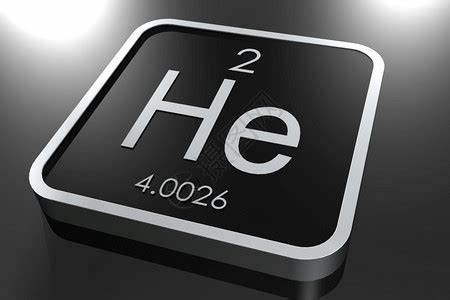
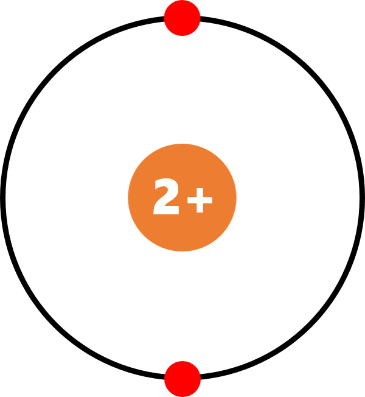
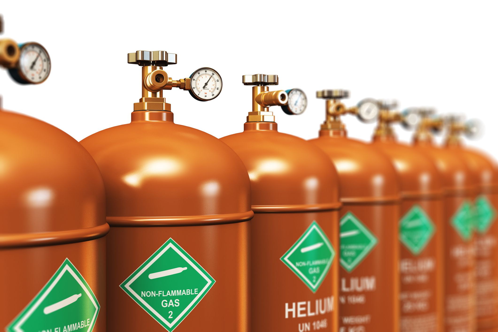

NGUYÊN TỐ HELIUM
Helium
TÊN NGUYÊN TỐ: Helium
Ký hiệu hóa học: He
Phát âm: /ˈhēlēəm/
Năm khám phá ra: 1868
Người khám phá: Janssen & Lockyer
Khối lượng nguyên tử: 4.0026 g/mol
KHÁI NIỆM
Helium là một nguyên tố hóa học có ký hiệu He và nguyên tử số 2. Nó là một loại khí không màu, không mùi,
không độc, trơ, đúng đầu nhóm khí hiếm trong bảng tuần hoàn.
Điểm sôi và nóng chảy của nó là thấp nhất trong số tất cả các yếu tố.

TÍNH CHẤT VẬT LÍ
He là chất khí, không màu, khó hóa lỏng, Heli có điểm sôi thấp nhất trong tất cả các nguyên tố và chỉ có thể đông đặc dưới áp suất rất cao.
Tan ít trong nước, tan nhiều trong benzen, rượu etylic, toluen.
TÍNH CHẤT HÓA HỌC
Helium (He) là một nguyên tố hóa học không màu, không mùi, không vị, không độc và trơ.
Nó là một khí quý đơn nguyên tử nằm ở nhóm 18 của bảng tuần hoàn. Helium là nguyên tố nhẹ thứ hai sau hydro và không thể đông
đặc ở nhiệt độ và áp suất bình thường
CẤU HÌNH ELECTRON HELIUM

+ Cấu hình electron: 1s2
+ Chu kì: 1
+ Nhóm: VIIIA
+ Số hiệu nguyên tử: 2
+ Hóa trị: 0
ỨNG DỤNG CỦA HELIUM
- Dùng để nghiên cứu khoa học, trình diễn quang học, vét mã vạch.
- Dùng phẩu thuật laser mắt.
- Dùng để bảo vệ xung quanh điểm hàn không cho kim loại bị oxy hóa.
- Dùng để chụp quang phổ, chụp ảnh.
- Dùng cho điều khiển khinh khí cầu, bóng bay.
ĐIỀU CHẾ KHÍ HELIUM
Việc điều chế ra khí helium từ thiên nhiên, người ta trải qua hai giai đoạn:
GIAI ĐOẠN 1
- Ngưng tụ khí tự nhiên ở mức nhiệt độ thấp để các khí có chuyển sang dạng hóa lỏng.
Khi đó khí heli sẽ được thu ở trạng thái khí dạng đậm đặc.
- Lượng khí này sẽ có hàm lượng hữu ích được đánh giá là rất lớn không dưới 80%.
GIAI ĐOẠN 2
- Quá trình tinh chế để tiến hành loại bỏ các tạp chất lẫn bên trong hỗn hợp khí heli đã thu được bên trên để có khí heli tinh khiết.
- Một số chất có thể lẫn trong đó như khí methane, hydrogen, nitrogen... Sau quá trình này khí helium
thô đã được lọc để thu được heli tinh khiết hơn 90%.
Nguyên tố tiếp theo:
